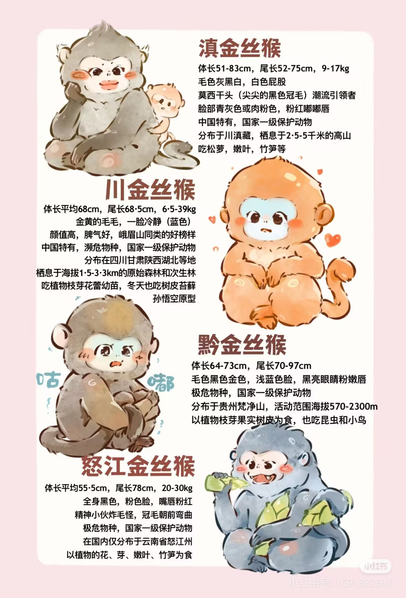
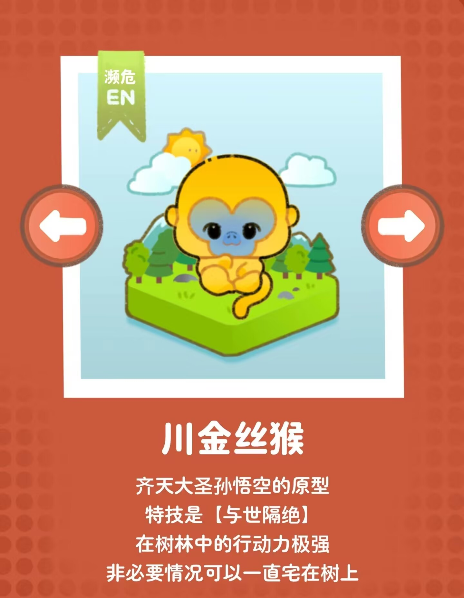

| 首页 | 全球动物保护日历 | 濒危动物图鉴 | 国际上采取措施 | 行动指南 | Every Live Is A Part Of The Planet We Called Earth. |
 金丝猴想对你说： “请珍惜我们共同的自然，我们是森林中的精灵，需要和平与安宁。保护我们的栖息地，就是保护你们的未来。” |
 |
🔍形态特征： |
| 首页 | 全球动物保护日历 | 濒危动物图鉴 | 国际上采取措施 | 行动指南 | We All Live In The Same Earth , Breathe The Same Air. |